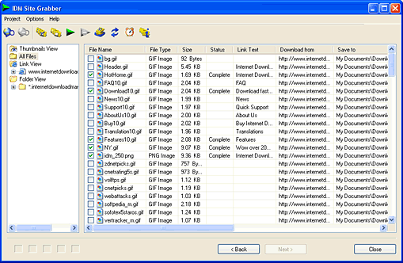
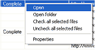
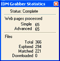

Main Action Dialog
The main grabber dialog has a toolbar, a window where all files are displayed, and a tree which shows a structure of a site.

The tree shows the site structure according to links and to folders. You can also see the entire list of all found files as well as all found files on a page or in a folder.
The toolbar has the following buttons: "Start Exploring ", "Stop Exploring", "Check All Files", "Uncheck All Files", "Start Downloading the checked files", "Stop Downloading the checked files", "Add checked files to the main IDM list and to the download queue", and "Show Grabber Statistics".
It's possible to check all required files for downloading and start downloading them immediately or add them to the main IDM list. At any time you can get back to a previous page of the Grabber wizard to change settings, filters, paths for saving files, and etc., and then go forward to resume exploring a site or to resume downloading files.
If a file has been downloaded, then the file or its folder can be opened from popup menu by right clicking on the file name.

It's also possible to select several files in the list using a mouse and the shift key and then check or uncheck the files all together. The "properties" item in popup menu opens a dialog where you can choose a file name to save the file, or where you can copy file URL or referrer to the clipboard.
"Show Grabber Statistics" button opens "IDM Grabber Statistics" window. The window is always on top so that you can see it while you are running a grabber project.

The grabber statistics shows general statistic information about the project.